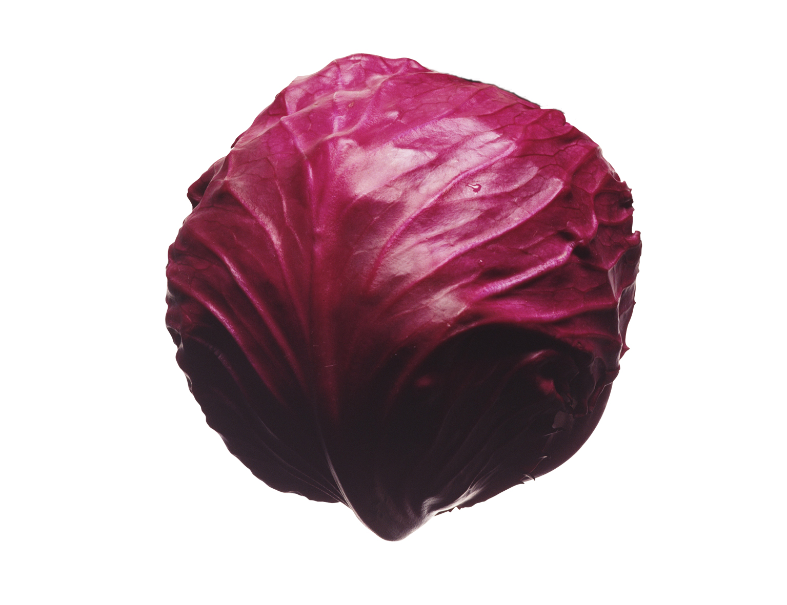

Наиболее распространенное холодостойкое влаголюбивое растение семейства
Капустных с высоким облиственным стеблем, на конце которого формируется
вытянутый или приплюснутый кочан (головка). Нижние мясистые темно-зеленые
или серо-зеленые листья образуют прикорневую розетку. Стебель с цветами
вырастает на второй год даже без корня. Цветы – желтые, иногда белые.
Плод – стручок с темно-бурыми семенами. Произрастает повсеместно в
умеренном климате. Вегетационный период от 90 дней (ранние сорта) до
180 дней (поздние сорта).
Однолетнее морозоустойчивое (выдерживает до 15 градусов мороза) овощное,
декоративное, кормовое растение семейства Капустных с оригинальными кружевными листьями
зеленого, фиолетового, красного цвета и твердым стеблем. Имеет хорошие вкусовые качества,
особенно после заморозки, но в пищу используют только листья так, как стебель не
образовывает кочан.
Однолетняя разновидность цветной капусты с мягким сливочно-ореховым вкусом
и со спиралевидными светло-зелеными соцветиями, расположенными в виде
логарифмической спирали,
полученная после скрещивания цветной капусты и брокколи. Листья темно-зеленые.В
пищу употребляют
соцветия после короткой тепловой обработки. Готовится также, как и брокколи.Богата
витамином С,
К и Каротиноидами.
Является разновидностью белокочанной, с фиолетово-красной
окраской, более морозоустойчивая, с ярко выраженным капустным вкусом. В
основном выращиваются среднепоздние и поздние сорта капусты.
Листья — более твердые. Хранится краснокочанная капуста лучше белокочанной,
содержит больше витаминов (витамина С больше в 4 раза). Красную окраску листьев
придает флавоноид антоциан.
Однолетнее растение с цилиндрическим стеблем от 25 до 65 сантиметров
в высоту.Листья – сизо-зеленые с длинными черешками, часто прямостоячие с
восковым налетом.В пищу употребляют мясистые побеги в стадии бутонизации,
которые образуют в верхней части стебля головки снежно-белого
цвета, иногда зеленоватого или желтоватого оттенков. Цветы – мелкие белые или желтые.
Плод – небольшой цилиндрический стручок, который содержит мелкие темно-бурые
или черные семена. Лучше всего капуста развивается при температуре + 18-20 градусах.
Понижение температуры ниже 10 градусов переносит плохо.
По содержанию полезных веществ значительно превосходит белокочанную.
Спаржевая капуста – однолетнее овощное растение, подвид цветной капусты.
На вершине стебля образуется небольшая рыхлая головка мелких зелёных бутонов, которые и
употребляют в пищу не дожидаясь полного развития бутонов в желтые цветы.
На месте среза образуются новые побеги. Прекрасно произрастает в умеренном
климате.
Является представителем семейства капустных. Это влаголюбивое двухлетнее
овощное растение с темно-зелеными или желтыми пузырчатыми листьями. Как
и белокочанная капуста образует кочан, но более рыхлый и мелкий. Также на
второй год появляются желтые цветы и стручки с мелкими семенами. Савойская
капуста содержит больше полезных витаминов и микроэлементов, чем белокочанная.
Ее можно включать в рацион больным диабетом и пожилым людям. Употреблять в
пищу лучше в сыром виде для профилактики онкозаболеваний.
Петсай, салатная капуста – травянистое однолетнее тенелюбивое
растение семейства Капустные, разновидность репы. Нежные светло зеленые
или почти желтые листья с белыми сочными прожилками и волнистыми краями
сформированы в продолговатую розетку или кочан до полуметра длинной. Вегетационный
период – 25-35 дней. При посадке лучше использовать затененные места потому,
что при длинном световом дне она быстро стрелкуется. Готовят также,
как и белокочанную: добавляют в салаты, борщи, гарниры, ее маринуют и квасят.
У пекинской капусты нет характерного капустного вкуса.
Морковь Амстердамская обладает отличными сортовыми характеристиками. Она
нетребовательна в уходе и обладает отличной урожайностью. Вырастить ее на своем участке
сможет даже не вполне опытный овощевод.Плод творения польских селекционеров. Сорт раннеспелый.
Полностью вызревает за 90 дней.
Вес плода может достигать 165 грамм. Длина от 14 до 20 см.
Они очень сочные, вкусные, сахаристые, использовать их можно для переработки и
в свежем виде.Особенно интересно их будет есть детям, можно попробовать посадить сорт только
ради тех детей,что наотрез отказываются кушать морковь. Корнеплоды не растрескиваются при
созревании, имеют оранжевый цвет, что говорит о высоком содержании каротина. За счет
малого веса урожайность составит 2 килограмма с квадрата.Еще один плюс — это
ультраскороспелость.
Разновидность моркови сорта Dragon была получена из китайской фиолетовой моркови
методом
селекции в штате Висконсин в конце ХХ столетия. Уникальность Дракона состоит в том, что цвет ее
кожицы
пурпурно-фиолетовый, однако внутри скрывается привычная оранжевая сердцевина. Зрелая морковь
имеет
конусообразную форму, достигает в длину 25 см, толщина ее колеблется в среднем от 15 до
30см.
Сорт позднеспелый. Сортотип Флакке. Период от полных всходов до начала
технической спелости
110–120 дней. Розетка листьев прямостоячая. Лист темно-зеленый, среднерассеченный, без
антоциановой окраски.
Корнеплод конической формы с заостренным кончиком, длиной свыше 20 см, окраска коры и
сердцевины желтая.
Масса корнеплода 200–300 г. Содержание сухого вещества 11,5%, сахара 7,5% в 100 г сока.
Вкусовые качества
хорошие, товарность высокая. Пригоден для длительного хранения. Рекомендуется для
использования в домашней
кулинарии, особенно для плова и ухи.
Плоды сорта Акварель по форме напоминающие вытянутые сливы, ярко
красного цвета.
Масса каждой помидорки чаще всего от 40 до 120г. Зрелые плоды содержат до 6%
сухого вещества У них
плотные мякоть и кожица, а значит томаты прекрасно подходят для заготовки впрок
и засолки.
Полностью созревшие круглые плоды от ярко-красного до коричнево
-фиолетового цвета,
весят около 130г. Плоды крупные, плотные, многокамерные с высоким содержанием
сухих веществ.
Очень вкусные плоды идеальны для салатов и переработки на сок или пасту.
Сорт томатов Рапунцель замечательно плодовит. На каждой из длинных кистей
вырастает до 40
плодов - мелких, упругих, округлых. Компактное, аккуратное супротивное расположение
плодов на ветке – еще
одно качество растения. Сочную сладкую мякоть уже оценили садоводы, выращивающие новый
гибрид и заметившие
малое число камер в помидорках. Томат Рапунцель как салатный сорт превосходен
для употребления в сыром виде,
но хорош и для консервирования. Невозможно лишь его длительное хранение. сорт
томатов рапунцельСостав
плодов отличает повышенная сахаристость, наличие пектинов, крахмалов и множества
минеральных веществ,
соединения которых наделяют их превосходными диетическими и питательными свойствами.
Сорт томатов «Мазарини» – настоящая находка для любителей сочных
крупноплодных помидоров.
Растение отличается отличной урожайностью, в зависимости от региона его можно
выращивать в теплице,
в открытом грунте или под пленкой. Томаты устойчивы к основным заболеваниям,
но требуют внимательного
ухода и формирования куста.